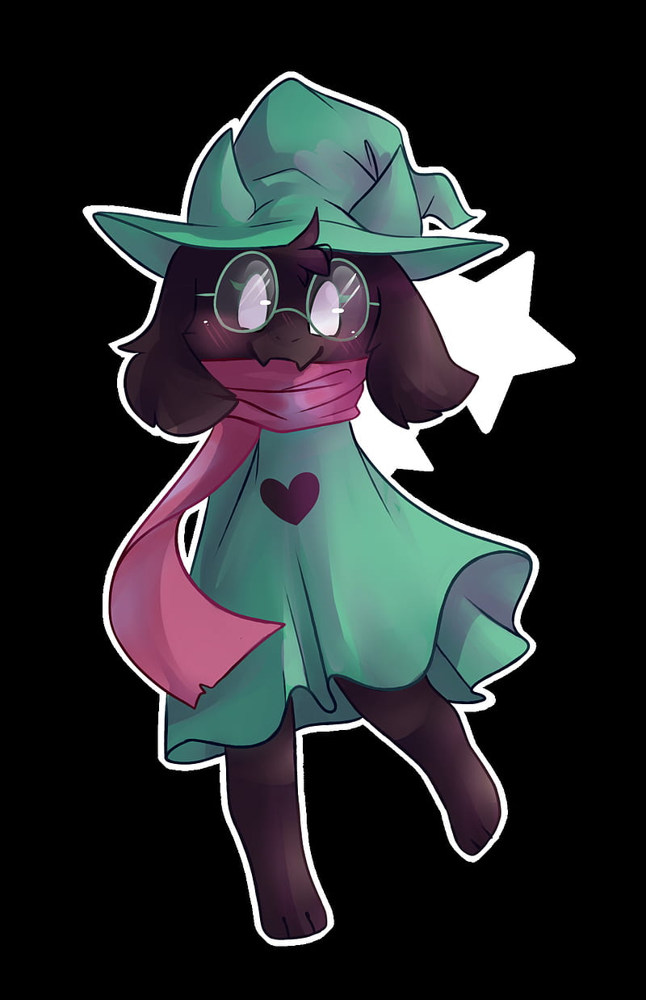

espagueti
Receta de receta de espagueti

Ingredientes
- 1 lata leche evaporada carnation clavel
- 1 cubo de consome de pollo
- 1/2 cucharadita de cebolla en polvo
- 1/4 cucharadita de ajo en polvo
- 1 paquete de queso crema (190)
- 1/2 taza de agua
- 120 gramos de jamon picado
- 1 paquete de pasta espagueti cocido y escurrido (200g)
Elaboracion (pasos)
- para la salsa, licua la leche evaporada con el cubo de consome de pollo, el ajo y cebolla en polvo, el queso ctrema y el agua.
- calienta la salsa hasta que espese un poco, moviendo constantemente para evitar que se apague. Agrega el jamon, el espagueti cocido escurrido y mezcla.
- sirve caliente.
recetas de cocina